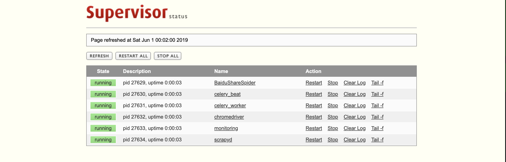

项目部署记录¶
项目结构如下:
apudeMacBook-Pro:rd apuyuseng$ tree -L 2
.
├── BaiduShareSpider
│ ├── LICENSE
│ ├── __pycache__
│ ├── conf
│ ├── export.py
│ ├── export.sh
│ ├── login.py
│ ├── mail.py
│ ├── main.py
│ ├── models
│ ├── outmc.py
│ ├── pcloud.html
│ ├── requirements.txt
│ ├── screenshot
│ └── test_get_token.py
├── chromedriver
├── monitoring
│ ├── Dockerfile
│ ├── Dockerfile_base
│ ├── Dockerfile_web
│ ├── README.md
│ ├── asm
│ ├── assistant.py
│ ├── bin
│ ├── conf
│ ├── download
│ ├── env
│ ├── froala
│ ├── lib
│ ├── model
│ ├── monitoring.ini
│ ├── requirements.txt
│ ├── start.sh
│ ├── supervisord.conf
│ ├── supervisord.pid
│ ├── tasks
│ ├── view
│ ├── www
│ └── z
├── scrapyd
│ ├── Dockerfile
│ ├── LICENSE
│ ├── README.md
│ ├── requirements.txt
│ ├── scrapyd.conf
│ └── start.sh
└── supervisord.conf
第一步 python运行环境¶
隔离运行环境:
$ pip3 install virtualenv $ virtualenv --no-site-packages venv
安装第三方库:
$ source ./venv/bin/activate $ pip3 install -r monitoring/requirements.txt $ pip3 install -r BaiduShareSpider/requirements.txt $ pip3 install scrapyd w3lib requests Twisted==18.7.0
第二步 数据库准备与配置¶
创建数据库:
(venv) apudeMacBook-Pro:rd apuyuseng$ psql psql (11.3) Type "help" for help. apuyuseng=# CREATE USER apu PASSWORD 'yuyuan132' CREATEDB; apuyuseng=#CREATE DATABASE monitoring WITH ENCODING='UTF8' OWNER=apu TEMPLATE=template1 CONNECTION LIMIT=-1;
小技巧
这是创建数据库及分配权限
其中 apu 用户名 yuyuan132 是密码， monitoring 是数据库名，当然强烈建议更改，更改后请修改对应项目的数据库配置文件，一般的都会放在project/conf/base.toml,在配置文件中有相应的介绍。 数据库的相关设置和语法请查看postgresql。
创建项目表和导入系统默认数据:
$ cd monitoring $ python3 assistant.py schema $ python3 assistant.py data
第三步 配置supervisord运行项目¶
详细配置请到supervisord官网查看 这里我们需要更改 directory 为我们相应项目路径
如我的:
[supervisord]
[supervisorctl]
[inet_http_server]
port = 0.0.0.0:9001
username = admin
password = admin
[program:celery_worker]
command=celery -A bin.service.celery worker --loglevel=info
directory=/Users/apuyuseng/rd/monitoring
autorestart=true
redirect_stderr=true
[program:celery_beat]
command=celery -A bin.service.celery beat --loglevel=info
directory=/Users/apuyuseng/rd/monitoring
autorestart=true
redirect_stderr=true
[program:monitoring]
command=gunicorn --workers=8 --log-level=error --bind=0.0.0.0:8000 -k flask_sockets.worker bin.service.wsgi:app
directory=/Users/apuyuseng/rd/monitoring
autorestart=true
redirect_stderr=true
[program:chromedriver]
command=./chromedriver --whitelisted-ips --log-level=INFO
autostart=true
autorestart=true
[program:BaiduShareSpider]
command=python3 main.py
directory=/Users/apuyuseng/rd/BaiduShareSpider
autostart=true
autorestart=true
[program:scrapyd]
command=scrapyd
autostart=true
autorestart=true
小技巧
supervisord的配置不止这么简单
可以根据需求设置日志的存储、重试次数等。
运行 :在终端直接执行 supervisord 访问 http://127.0.0.1:9001 登陆账号密码是 admin ，这个在上述配置中可以配置的
第四步 配置nginx¶
可以通过 nginx -t 知道配置文件路径 /usr/local/etc/nginx/nginx.conf
我的配置文件如下:
server {
listen 80;
server_name localhost;
#charset koi8-r;
#access_log logs/host.access.log main;
access_log /var/log/nginx/monitoring.access.log;
error_log /var/log/nginx/monitoring.error.log;
location /project/baidu_spider/run {
proxy_pass http://0.0.0.0:8000/project/baidu_spider/run;
proxy_http_version 1.1;
proxy_set_header Upgrade $http_upgrade;
proxy_set_header Connection "upgrade";
}
location / {
proxy_pass http://0.0.0.0:8000/;
proxy_set_header Host $host;
proxy_set_header X-Real-IP $remote_addr;
proxy_set_header REMOTE-HOST $remote_addr;
proxy_set_header X-Forwarded-For $proxy_add_x_forwarded_for;
}
location /res/ {
alias /Users/apuyuseng/rd/monitoring/www/;
rewrite ^(.*)\.md5_[^.]*\.(css|js)$ $1.$2 last;
}
}
其中将路径修改成项目路径
小技巧
nginx是方向代理的好帮手
nginx配置很强大、可以根据需求配置、如日志、缓存、限制ip、登陆等等，若需要请到官网查看相应配置。
到此部署已经完成。😄